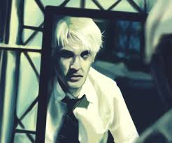
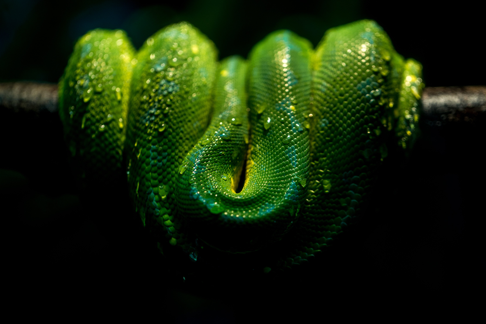
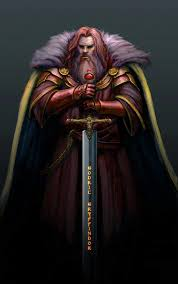
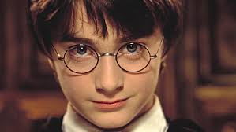
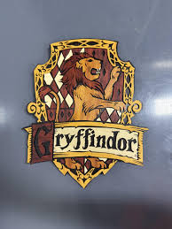

What is one signifigant thing about slytherian? Snakes, Draco Malfoy and Sathazar Slytherian.


Snakes represent what slytherian is as a house of Hogwarts. They represent Sathazar's ability to speak Parseletongue. HISTORY TIME! Slytherin House was founded by Salazar Slytherin, one of the four founders of Hogwarts, around 990-993 AD. The house values cunning, resourcefulness, and ambition. Salazar's belief in blood purity led to discrimination against Muggle-born students, an attitude that ultimately caused a major feud with Godric Gryffindor and his own departure from the school. Slytherin left behind the Chamber of Secrets, a testament to his views on pure-blood supremacy and a means to purge the school of Muggle-borns. The house's emblem is the serpent due to Salazar's ability to speak Parseltongue, and its colors are green and silver.
Credit of google and other websites
The house's animal is a lion for one of two reasons. A lion is brave and any student in gryffendor is strong and brave like a lion. Gryffindor House was founded by Godric Gryffindor in the 10th century, along with three other founders, to educate witches and wizards in a time of increasing danger. The house values courage, bravery, nerve, and chivalry, symbolized by a scarlet and gold lion. Its history is intertwined with the Sorting Hat, the Sword of Gryffindor, and a deep-rooted rivalry with Slytherin House stemming from disagreements over blood purity. Found by google and other websites
This is the founder,
This is the main character.
This is the animal
All of these pictures are from google and other websits